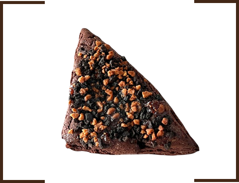
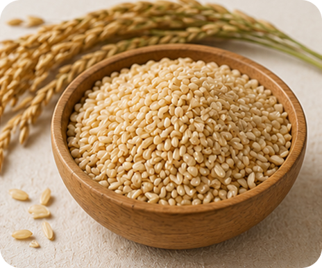
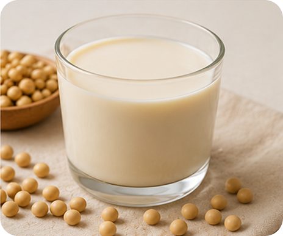
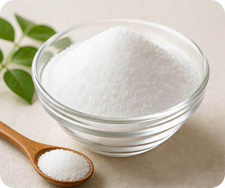
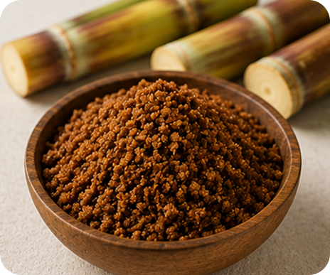
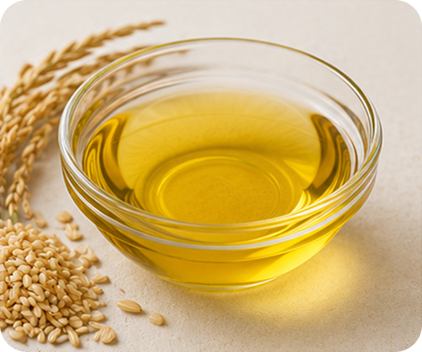

딸기 품은 딸기 삼각이
100g 당 314kcal

100% 우리 통밀로 만든 고식이섬유 비건 스콘
다이어트 중에 맛있으면서도
건강한 디저트를 먹고싶어
비건을 시작하고 싶은데
가볍게 시작할 만 한게 없을까?
하루하루가 너무 바빠서
끼니를 자꾸 놓쳐요
윤달은 잠깐의 즐거움인 ‘간식’보다
하루를 채우는 건강한 ‘한 끼'를 고민했습니다.
다이어터 추천
비건입문자 추천
직장인 추천
윤달은 100% 우리 통밀과 식물성 원재료를 사용해 건강한 포만감과 깊은 풍미를 담아냅니다

비정제 통곡물, 식이섬유가 풍부한

혈액순환 및 장 기능을 개선하는

오직 콩과 소금만으로 만든

설탕과 유사한 단 맛, 10g 당 당류 0.1g

100% 유기농 비정제원당

트랜스 지방 Zero, 영양소가 살아있는
삼각이 Checkpoint

해동하시고 바로 드시면 더욱 촉촉하고
부드러운 식감을 느끼실 수 있어요!

180도에서 10분, 뒤집어 5분 구운 뒤 식혀주세요
냉동 3시간 후 겉은 콰삭, 속은 꾸덕해져요!

커피와 우유랑 함께 드시면 더욱 부드럽고
맛있게 삼각이를 즐기실 수 있습니다!
100g 당 314kcal

작명센스가ㅋㅋㅋ 두 맛 다 잘 느껴지는데 치즈가 짭짤한 맛이 더 잘 나요! 블랙부분도 많이 단 편이 아니라서 짠맛이 더 잘 느껴졌나봐요!
/ sang*******
2026.03.01

ㅎr.. 진짜 이렇게 성분좋은 스콘 어디에도 없어요🥹 맛도 진하고 너무 맛있고, 한 개만 먹는게 어려울 정도입니다,, 원래 황친자인데.. 삼각이 먹고 쑥에 빠져서.. 다음에 쑥으로 쟁이려고 합니다💚 하 진짜 계속 팔아주시고 또 팔아주시고.. 쑥 없애지 말아주시고.. 감사합니댜 그리고 에프굽이 유명한 스콘인데 자취생이다 보니 에프없이 살아서 걱정했는데, 그냥 얼먹으로 멋어도 넘 맛있어서 행복했습니댜
/ dlsd********
2026.06.06

윤달 ㅎㅎ 이번에도 신랑이 장바구니보고 주문 해줬어용 ㅎ 저보다 신랑이 좋아해서 사주는거같은생각이 ㅎㅎ 무튼 맛있고 이쁘지만 무엇보다 영양적으로 만족해요 당충전이 필요할 때 건강까지 생각해서 먹을수있어 좋아요~ 성분도 맘에 듭니다 ㅎㅎ 당연 재구매죠~! 요거트랑 찰떡입니다아 ㅎㅎ
/ ster******
2026.06.02